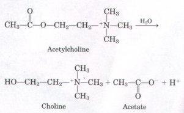
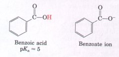
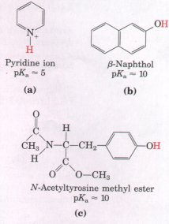
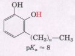
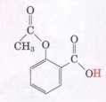

Water is the most abundant compound in living organisms. Its relatively high freezing point, boiling point, and heat of vaporization are the result of strong intermolecular attractions in the form of hydrogen bonding between adjacent water molecules. Liquid water has considerable short-range order and consists of short-lived hydrogen-bonded clusters. The polarity and hydrogen-bonding properties of water make it a potent solvent for many ionic compounds and other polar molecules. Nonpolar compounds, including the gases CO2, 02, and N2, are poorly soluble in water. Water disperses amphipathic molecules to form micelles, clusters of molecules in which the hydrophobic groups are hidden from water and the polar groups are exposed on the external surface.
Four types of weak interactions occur within and between biomolecules in an aqueous solvent: hydrogen bonds and ionic, hydrophobic, and van der Waals interactions. Although weak individually, these interactions collectively create a very strong stabilizing force for proteins, nucleic acids, and membranes. Weak (noncovalent) interactions are also at the heart of enzyme catalysis, antibody function, and receptor-ligand interactions.
Water ionizes very slightly to form H+ and OH- ions. In dilute aqueous solutions, the concentrations of H+ and OH- ions are inversely related by the expression KW = [H+][OH-] = 1 × 10-14 M2 (at 25 °C). The hydrogen-ion concentration of biological systems is usually expressed in terms of pH, defined as pH = -log [H+]. The pH of aqueous solutions is measured by means of glass electrodes sensitive to H+ concentration.
Acids are defined as proton donors and bases as proton acceptors. A conjugate acid-base pair consists of a proton donor (HA) and its corresponding proton acceptor (A-). The tendency of an acid HA to donate protons is expressed by its dissociation constant (Ka = [H+][A-]/[HA]) or by the function pKa, defmed as -log Ka, which can be determined from an experimental titration curve. The pH of a solution of a weak acid is quantitatively related to its pKa and to the ratio of the concentrations of its proton-donor and proton-acceptor species by the Henderson-Hasselbalch equation.
A conjugate acid-base pair can act as a buffer and resist changes in pH; its capacity to do so is greatest at a pH equal to its pKa. Many types of biomolecules have functional groups that contribute buffering capacity. H2CO-/HCO3 and H2PO4/HPO4- are important biological buffer systems. The catalytic activity of enzymes is strongly influenced by pH, and it is essential that the environments in which they function be buffered against large pH changes.
Water is not only the solvent in which metabolic reactions occur; it participates directly in many of the reactions, including hydrolysis and condensation reactions.
The physical and chemical properties of water are central to biological structure and function. The evolution of life on earth was doubtless influenced greatly by both the solvent and reactant properties of water.
General
Dick, D.A.T. (1966) Cell Water, Butterworth Publishers, Inc., Stoneham, MA.
A classic description of the properties and functions of water in living organisms.
Edsall, J.T. & Wyman, J. (1958) Biophysical Chemistry, Vol. 1, Academic Press, Inc., New York. An excellent discussion of water and its fitness as a biological solvent.
Eisenberg, D. & Kauzmann, W. (1969) The Structure and Properties of Water, Oxford University Press, New York.
An aduanced treatment of the physical chemistry of water.
Franks, F. (ed) (1975) Water-A Comprehensive Treatise, Vol. 4, Plenum Press, New York.
Franks, F. & Mathias, S.F. (eds) (1982) Biophysics of Water, John Wiley & Sons, Inc., New York.
A large collection of papers on the structure of pure water and of the cytoplasm.
Henderson, L.J. (1927) The Fitness of the Enuironment, Beacon Press, Boston, MA. [Reprinted (1958). ~
This book is a classic; it includes a discussion of the suitability of water as the soluent for life on earth.
Kuntz, I.D. & Zipp, A. (1977) Water in biological systems. New Engl. J. Med. 297, 262-266.
A brief reuiew of the physical state of cytosolic water and its interactions with dissolued biomolecules.
Solomon, A.K. (1971) The state of water in red cells. Sci. Am. 224 (February), 88-96.
A description of research on the structure of water within cells.
Stillinger, F.H. (1980) Water revisited. Science 209, 451-457.
A short reuiew of the physical structure of water, including the importance of hydrogen bonding and the nature of hydrophobic interactions.
Symons, M.C.R. (1981) Water structure and reactivity. Acc. Chem. Res. 14, 179-187.
Wiggins, P.M. (1990) Role of water in some biological processes. Microbiol. Reu. 54, 432-449.
A recent and excellent reuiew of water in biology, including discussion of the physical structure of liquid water, its interaction with biomolecules, and the state of water in liuing cells.
Weak Interactions iri Aqueous Systems Fersht, A.R. (1987) The hydrogen bond in molecular recognition. Trends Biochem. Sci. 12, 301-304.
A clear, brief, quantitatiue discussion of the contribution of hydrogen bonding to molecular recognition and enzyme catalysis.
Frieden, E. (1975) Non-covalent interactions: key to biological flexibility and specificity. J. Chem. Educ. 52, 754-761.
Review of the four kinds of weak interactions that stabilize macromolecules and confer bsological specificity, with clear examples.
Tanford, C. (1978) The hydrophobic effect and the organization of living matter. Science 200, 10121018.
An excellent review of the chemical and energetic basis for hydrophobic interactions between biomolecules in aqueous solutions.
Weak Acids, Weak Bases, and Buffers
Montgomery, R. & Swenson, C.A. (1976) Quantitatiue Problems in the Biochemical Sciences, 2nd edn, W.H. Freeman and Company, New York.
This and the following book are excellent compilations of solved problems, many of which concern pH, the ionization of weak acids and bases, and buffers.
Segel, I.H. (1976) Biochemical Calculations, 2nd edn, John Wiley & Sons, Inc., New York.
1. Artificial Vinegar One way to make vinegar (not the preferred way) is to prepare a solution of acetic acid, the sole acid component of vinegar, at the proper pH (see Fig. 4-9) and add appropriate flavoring agents. Acetic acid (Mr 60) is a liquid at 25 °Cwith a density of 1.049 g/mL. Calculate the amount (volume) that must be added to distilled water to make 1 L of simulated vinegar (see Table 4-7).
2. Acidity of Gastric HCl In a hospital laboratory, a 10.0 mL sample of gastric juice, obtained several hours after a meal, was titrated with 0.1 M NaOH to neutrality; 7.2 mL of NaOH was required. The stomach contained no ingested food or drink, thus assume that no buffers were present. What was the pH of the gastric juice?

3. Measurement of Acetylcholine Leuels by pH Changes The concentration of acetylcholine, a neurotransmitter, can be determined from the pH changes that accompany its hydrolysis. When incubated with a catalytic amount of the enzyme acetylcholinesterase, acetylcholine is quantitatively converted into choline and acetic acid, which dissociates to yield acetate and a hydrogen ion:In a typical analysis, 15 mL of an aqueous solution containing an unknown amount of acetylcholine had a pH of 7.65. When incubated with acetylcholinesterase, the pH of the solution decreased to a final value of 6.87. Assuming that there was no buffer in the assay mixture, determine the number of moles of acetylcholine in the 15 mL of unknown.
4. Significance of the pK~ of an Acid One common description of the pKa of an acid is that it represents the pH at which the acid is half ionized, that is, the pH at which it exists as a 50:50 mixture of the acid and the conjugate base. Demonstrate this relationship for an acid HA, starting from the equilibrium-constant expression.
5. Properties of a Buffer The amino acid glycine is often used as the main ingredient of a buffer in biochemical experiments. The amino group of glycine, which has a pKa of 9.6, can exist either in the protonated form (-NH3 ) or as the free base (-NH2) because of the reversible equilibrium
R-NH3 R-NH2 + H+
(a) In what pH range can glycine be used as an effective buffer due to its amino group?
(b) In a 0.1 M solution of glycine at pH 9.0, what fraction of glycine has its amino group in the -NH3 form?
(c) How much 5 M KOH must be added to 1.0 L of 0.1 M glycine at pH 9.0 to bring its pH to exactly 10.0?
(d) In order to have 99% of the glycine in its -NH3 form, what must the numerical relation be between the pH of the solution and the pKa of the amino group of glycine?
| 6. The Effect of pH on Solubility The
strongly polar hydrogen-bonding nature of water makes it
an excellent solvent for ionic (charged) species. By
contrast, un-ionized, nonpolar organic molecules, such as
benzene, are relatively insoluble in water. In principle,
the aqueous solubility of all organic acids or bases can
be increased by deprotonation or protonation of the
molecules, respectively, to form charged species. For
example, the solubility of benzoic acid in water is low.
The addition of sodium bicarbonate raises the pH of the
solution and deprotonates the benzoic acid to form
benzoate ion, which is quite soluble in water.  Are the molecules in (a) to (c) (below) more soluble in an aqueous solution of 0.1 Ns NaOH or 0.1 ns HCl? (The dissociable protons are shown in red.) |
 |

7. D-eatment of Poison Iuy Rash Catechols substituted with long-chain alkyl groups are the components of poison ivy and poison oak that produce the characteristic itchy rash.If you were exposed to poison ivy, which of the treatments below would you apply to the affected area? Justify your choice.
(a) Wash the area with cold water.
(b) Wash the area with dilute vinegar or lemon juice.
(c) Wash the area with soap and water.
(d) Wash the area with soap, water, and baking soda (sodium bicarbonate). ?BR> 8. pH and Drug Absorption Aspirin is a weak acid with a pKa ~f 3.5.

8.pH and Drug Absorption Aspirin is a weak acid wih a pka of 3.5.It is absorbed into the blood through the cells lining the stomach and the small intestine. Absorption requires passage through the cell membrane, which is determined by the polarity of the molecule: charged and highly polar molecules pass slowly, whereas neutral hydrophobic ones pass rapidly. The pH of the gastric juice in the stomach is about 1.5 and the pH of the contents of the small intestine is about 6. Is more aspirin absorbed into the bloodstream from the stomach or from the small intestine? Clearly justify your choice.
9. Preparation of Standard Buffer for Calibration of a pHMeter The glass electrode used in commercial pH meters gives an electrical response proportional to the hydrogen-ion concentration. To convert these responses into pH, glass electrodes must be calibrated against standard solutions of known hydrogen-ion concentration. Determine the weight in grams of sodium dihydrogen phosphate (NaH2PO4 ~ H20; formula weight (FW) 138.01) and disodium hydrogen phosphate (Na2HPO4; FW 141.98) needed to prepare 1 L of a standard buffer at pH 7.00 with a total phosphate concentration of 0.100 M (see Table 4-7).
10. Control of Blood pH by the Rate of Respiration
(a) The partial pressure of CO2 in the lungs can be varied rapidly by the rate and depth of breathing. For example, a common remedy to alleviate hiccups is to increase the concentration of CO2 in the lungs. This can be achieved by holding one's breath, by very slow and shallow breathing (hypoventilation), or by breathing in and out of a paper bag. Under such conditions, the partial pressure of CO2 in the air space of the lungs rises above normal. Qualitatively explain the effect of these procedures on the blood pH.
(b) A common practice of competitive shortdistance runners is to breathe rapidly and deeply (hyperventilation) for about half a minute to remove CO2 from their lungs just before running in, say, a 100 m dash. Their blood pH may rise to 7.60. Explain why the blood pH goes up.
(c) During a short-distance run the muscles produce a large amount of lactic acid from their glucose stores. In view of this fact, why might hyperventilation before a dash be useful?